Econometrics I
TA Christian Alemán
Session 6: Friday 4, March 2022
Based on WGreene Ch9.
Activity 1: Hetoskedasticity
Harvey's Model of Multiplicative heteroscedasticity:
General Formulation:
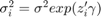
1. Then the case we saw last friday:
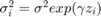
2. And Group Wise heteroscedasticity:
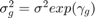
Consider Cost function for the U.S. airline industry:
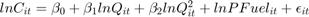
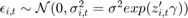
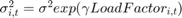
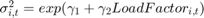 with 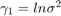
Then define the weights as:
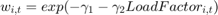
To estimat FGLS:
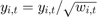 and 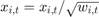
% Housekeeping clear all close all clc % Load Data set load('data_harvey') X = [ones(size(TableF61.LF,1),1),log(TableF61.Q),(log(TableF61.Q)).^2,log(TableF61.PF)]; Y = log(TableF61.C); X_aux = TableF61.LF; [beta_ols,sigma,e,se_ols,se_rob] = my_ols(Y,X); stat = {'Constant';'log(Output)';'log(Output^2)';'log(Price Fuel)'}; t = table(stat,beta_ols,se_ols); disp(t) % Visual Inspection figure(1) hold on grid on plot(X_aux,e,'ko','MarkerFaceColor','k') yline(0) ylim([-0.4,0.4]) ylabel('Residual') xlabel('Load Factor')
stat beta_ols se_ols
___________________ ________ ________
{'Constant' } 9.1382 0.23956
{'log(Output)' } 0.92615 0.03158
{'log(Output^2)' } 0.029145 0.012027
{'log(Price Fuel)'} 0.41006 0.018384
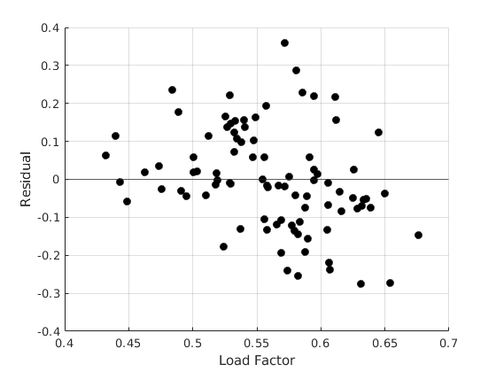 White Test
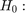 Homoscedasticity
disp('White Test') [value, pvalue] = my_white(e,X); t = table(pvalue); disp(t) if pvalue<0.05 disp('Reject Homoscedasticity') else disp('Cannot Reject Homoscedasticity') end
White Test
pvalue
__________
4.4529e-05
Reject Homoscedasticity
LR test(Breusch Pagan)
Homoscedasticity
disp('BP test') [result] = my_BP(e,X); if result ==1 disp('Reject Homoscedasticity') else disp('Cannot Reject Homoscedasticity') end
BP test Reject Homoscedasticity
Estimate FGLS: Weighted
opt.het = 3;
[beta_fgls,~,se_fgls] = my_gls(Y,X,X_aux,opt);
stat = {'Constant';'log(Output)';'log(Output^2)';'log(Price Fuel)'};
t = table(stat,beta_ols,se_ols,se_rob,beta_fgls,se_fgls);
disp(t)
% Estimate FGLS: Inverse of the Variance
opt.het = 1;
[beta_fgls,~,se_fgls] = my_gls(Y,X,X_aux,opt);
stat = {'Constant';'log(Output)';'log(Output^2)';'log(Price Fuel)'};
t = table(stat,beta_ols,se_ols,se_rob,beta_fgls,se_fgls);
disp(t)
stat beta_ols se_ols se_rob beta_fgls se_fgls
___________________ ________ ________ ________ _________ ________
{'Constant' } 9.1382 0.23956 0.22595 9.2463 0.21404
{'log(Output)' } 0.92615 0.03158 0.030128 0.92136 0.032285
{'log(Output^2)' } 0.029145 0.012027 0.011346 0.02445 0.011155
{'log(Price Fuel)'} 0.41006 0.018384 0.017524 0.40352 0.016592
stat beta_ols se_ols se_rob beta_fgls se_fgls
___________________ ________ ________ ________ _________ _________
{'Constant' } 9.1382 0.23956 0.22595 9.1335 0.032116
{'log(Output)' } 0.92615 0.03158 0.030128 0.92514 0.0054461
{'log(Output^2)' } 0.029145 0.012027 0.011346 0.028878 0.0020759
{'log(Price Fuel)'} 0.41006 0.018384 0.017524 0.41027 0.0024223
Group Heteroscedasticity:
Example: Gasoline usage in 18 of the 30 OECD countries. The model analyzed is:
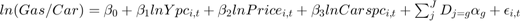
We suspect heteroscedasticity across countries (groups)
load('data_OECD') par.nc = 18;% Number of countries par.nt = 19;% Number of years % Create Country dummy variables: Xdum = zeros(par.nc*par.nt,par.nc); for i = 1:par.nc if i ==1 uv = i*par.nt; lv = uv-par.nt+1; else lv = uv+1; uv = i*par.nt; end Xdum(lv:uv,i) = 1; end Y = TableF91.LGASPCAR; X = [TableF91.LINCOMEP,TableF91.LRPMG,TableF91.LCARPCAP,Xdum]; [beta_ols,sigma,e,se_ols,se_rob] = my_ols(Y,X); stat = {'log(INC PC)';'log(PRICE)';'log(CAR PC)';'C1';'C2';'C3';'C4';... 'C5';'C6';'C7';'C8';'C9';'C10';'C11';'C12';'C13';'C14';'C15';'C16';'C17';'C18'}; t = table(stat,beta_ols,se_ols); disp(t)
stat beta_ols se_ols
_______________ ________ ________
{'log(INC PC)'} 0.66225 0.071097
{'log(PRICE)' } -0.3217 0.042724
{'log(CAR PC)'} -0.64048 0.028753
{'C1' } 2.2859 0.2212
{'C2' } 2.1656 0.20626
{'C3' } 3.0418 0.21182
{'C4' } 2.3895 0.2016
{'C5' } 2.2048 0.20972
{'C6' } 2.1499 0.21109
{'C7' } 2.3371 0.20818
{'C8' } 2.5923 0.23609
{'C9' } 2.2325 0.23207
{'C10' } 2.3759 0.20523
{'C11' } 2.2348 0.20749
{'C12' } 2.2167 0.19671
{'C13' } 1.6818 0.1574
{'C14' } 3.0263 0.38221
{'C15' } 2.4025 0.22195
{'C16' } 2.51 0.22831
{'C17' } 2.3454 0.2202
{'C18' } 3.0553 0.21275
Visual Inspection
figure(2) hold on grid on plot(TableF91.cn,e,'kx','linewidth',1.1) yline(0) ylabel('Residual') xlabel('Country')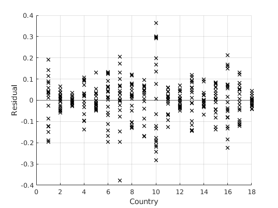
Then the weights are:

White Test
Homoscedasticity
disp('White Test') [value, pvalue] = my_white(e,X); %t = table(pvalue); %disp(t) if pvalue<0.05 disp('Reject Homoscedasticity') else disp('Cannot Reject Homoscedasticity') end
White Test Reject Homoscedasticity
LR test(Breusch Pagan)
Homoscedasticity
disp('BP test') [result] = my_BP(e,X); if result ==1 disp('Reject Homoscedasticity') else disp('Cannot Reject Homoscedasticity') end
BP test Reject Homoscedasticity
Estimate FGLS
opt.het = 0; [beta_fgls,~,se_fgls] = my_gls(Y,X,[],opt,par); t = table(stat,beta_ols,se_ols,se_rob,beta_fgls,se_fgls); disp(t)
stat beta_ols se_ols se_rob beta_fgls se_fgls
_______________ ________ ________ ________ _________ ________
{'log(INC PC)'} 0.66225 0.071097 0.072774 0.57507 0.028354
{'log(PRICE)' } -0.3217 0.042724 0.053813 -0.27967 0.034088
{'log(CAR PC)'} -0.64048 0.028753 0.038761 -0.5654 0.015632
{'C1' } 2.2859 0.2212 0.22608 2.4371 0.10956
{'C2' } 2.1656 0.20626 0.20983 2.317 0.099057
{'C3' } 3.0418 0.21182 0.22479 3.2065 0.11299
{'C4' } 2.3895 0.2016 0.20783 2.5471 0.099305
{'C5' } 2.2048 0.20972 0.21087 2.3386 0.097857
{'C6' } 2.1499 0.21109 0.21846 2.3007 0.10553
{'C7' } 2.3371 0.20818 0.21801 2.5721 0.10856
{'C8' } 2.5923 0.23609 0.2347 2.7238 0.11029
{'C9' } 2.2325 0.23207 0.22973 2.348 0.10458
{'C10' } 2.3759 0.20523 0.22643 2.5899 0.11453
{'C11' } 2.2348 0.20749 0.21311 2.3962 0.10151
{'C12' } 2.2167 0.19671 0.203 2.3849 0.096395
{'C13' } 1.6818 0.1574 0.17133 1.9031 0.078924
{'C14' } 3.0263 0.38221 0.3918 3.0782 0.1977
{'C15' } 2.4025 0.22195 0.2328 2.5649 0.11524
{'C16' } 2.51 0.22831 0.26168 2.8235 0.12911
{'C17' } 2.3454 0.2202 0.22322 2.4821 0.10613
{'C18' } 3.0553 0.21275 0.22705 3.2152 0.11545
Estimate FGLS: Inverse variance weight
opt.het = 1; [beta_fgls,~,se_fgls] = my_gls(Y,X,[],opt,par); t = table(stat,beta_ols,se_ols,se_rob,beta_fgls,se_fgls); disp(t)
stat beta_ols se_ols se_rob beta_fgls se_fgls
_______________ ________ ________ ________ _________ _________
{'log(INC PC)'} 0.66225 0.071097 0.072774 0.64884 0.010141
{'log(PRICE)' } -0.3217 0.042724 0.053813 -0.31172 0.005354
{'log(CAR PC)'} -0.64048 0.028753 0.038761 -0.6284 0.0056359
{'C1' } 2.2859 0.2212 0.22608 2.3286 0.029097
{'C2' } 2.1656 0.20626 0.20983 2.1946 0.025651
{'C3' } 3.0418 0.21182 0.22479 3.0753 0.027824
{'C4' } 2.3895 0.2016 0.20783 2.4175 0.025187
{'C5' } 2.2048 0.20972 0.21087 2.2311 0.025489
{'C6' } 2.1499 0.21109 0.21846 2.1824 0.027327
{'C7' } 2.3371 0.20818 0.21801 2.3819 0.027041
{'C8' } 2.5923 0.23609 0.2347 2.6286 0.029047
{'C9' } 2.2325 0.23207 0.22973 2.2587 0.028327
{'C10' } 2.3759 0.20523 0.22643 2.4207 0.027214
{'C11' } 2.2348 0.20749 0.21311 2.2657 0.025942
{'C12' } 2.2167 0.19671 0.203 2.2491 0.024314
{'C13' } 1.6818 0.1574 0.17133 1.7218 0.019432
{'C14' } 3.0263 0.38221 0.3918 3.0477 0.052502
{'C15' } 2.4025 0.22195 0.2328 2.4371 0.029051
{'C16' } 2.51 0.22831 0.26168 2.561 0.031624
{'C17' } 2.3454 0.2202 0.22322 2.3737 0.027897
{'C18' } 3.0553 0.21275 0.22705 3.0885 0.028447
Activity 2: Spurious Relations
The case of non-stationaty series
Construct two independent random walk proceses
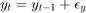
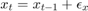
Where 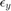 and 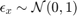
rng(123); n = 100; y = zeros(n,1); x = zeros(n,1); ey = randn(n,1); ex = randn(n,1); for i = 2:n y(i) = y(i-1) + ey(i); x(i) = x(i-1) + ex(i); end % Running Regression [beta_ols,sigma,e,se_ols,se_rob] = my_ols(y,[ones(n,1),x]); stat = {'beta'}; t = table(stat,beta_ols(2),se_ols(2)); disp(t)
stat Var2 Var3
________ _______ _______
{'beta'} 0.34974 0.10816
Visual inspection
figure(3) hold on grid on plot(1:n,y,'r-','linewidth',1.1) plot(1:n,x,'b-','linewidth',1.1) legend('y_{t}','x_{t}') xlabel('t')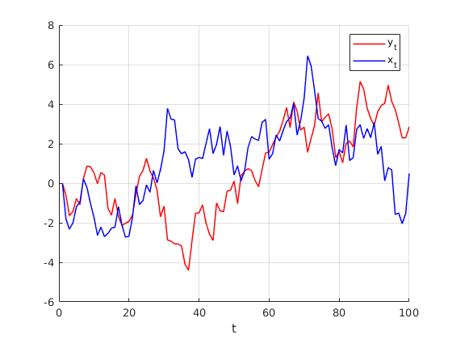
Detrending the variables
yd = y(2:end,1)-y(1:end-1,1); xd = x(2:end,1)-x(1:end-1,1);
Visual inspection
figure(4) hold on grid on plot(1:n-1,yd,'r-','linewidth',1.1) plot(1:n-1,xd,'b-','linewidth',1.1) legend('y_{t}','x_{t}') xlabel('t') % Running Regression [beta_ols,sigma,e,se_ols,se_rob] = my_ols(yd,[ones(n-1,1),xd]); stat = {'beta'}; t = table(stat,beta_ols(2),se_ols(2)); disp(t)
stat Var2 Var3
________ ________ ________
{'beta'} 0.067435 0.084084
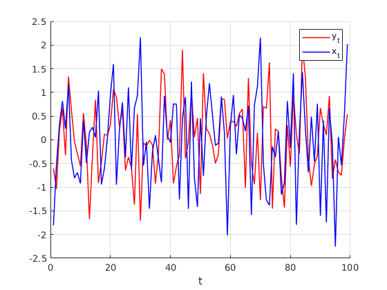 End of Code
dert_stop = 1; %------------------------------------------------- function [beta,e,se] = my_gls(y,x,x_aux,opt,par) %{ This function computes GLS estimates and its standard errors inputs: y dependent var x independent vars outputs: beta OLS coefficients sigma Estimator or variance of error e Backed residuals se Standard Errors %} [n,k] = size(x); if opt.het==1 % Tradicional heteroskedasticity [~,~,e_ols] = my_ols(y, x); e_ols = e_ols.^2; %C = diag(1./ sqrt(e_ols)); C = chol(inv(diag(e_ols))); [beta,~,e,se] = my_ols(C*y, C*x); elseif opt.het==2 % AR(1) Errors [~,~,e_ols] = my_ols(y, x); % estimation of AR(1) coefficient ey = e_ols(2:n); ex = e_ols(1:n-1); rho = ex\ey; % Estimating the autocorrelation coeff e_auto = ey-ex*rho; var_e = var(e_auto); %factor = eye(n).*var_e./(1-rho^2); % Cancels out sigma_e = eye(n); for i = 1:n for j = i+1:n sigma_e(i,j) = rho^(j-i); sigma_e(j,i) = sigma_e(i,j); end end %sigma_e = factor.*sigma_e; C = chol(inv(sigma_e)); [beta,~,e,se] = my_ols(C*y, C*x); elseif opt.het==3 % Weighted Least Squares: [~,~,e_ols] = my_ols(y, x); ye = log(e_ols.^2); xe = [ones(n,1),x_aux]; [c,~,~,~] = my_ols(ye, xe); wgt = exp(-c(1)-c(2).*x_aux); [beta,~,e,se] = my_ols(y.*sqrt(wgt), x.*repmat(sqrt(wgt),1,k)); else % By group % lets group the residuals [~,~,e_ols] = my_ols(y, x); e_aux = e_ols.^2; e_aux = reshape(e_aux,par.nt,par.nc); e_aux = mean(e_aux,1); e_aux = repmat(e_aux,par.nt,1); wgt = 1./e_aux(:); [beta,~,e,se] = my_ols(y.*sqrt(wgt), x.*repmat(sqrt(wgt),1,k)); end % end if end %------------------------------------------------------------------------- function [beta,sigma,e,se,se_rob] = my_ols(y,x) %{ This function computes OLS estiamtes and its standard errors inputs: y dependent var x independent vars outputs: beta OLS coefficients sigma Estimator or variance of error e Backed residuals se Standard Errors %} [n,k] = size(x); beta = x\y; sigma = (y-x*beta)'*(y-x*beta)/(n-rank(x)); e = y - x*beta; VCV = (e'*e)/n*inv(x'*x); se = sqrt(diag(VCV)); % Eicker-White se aux = x.*(kron(e.^2,ones(1,k))); VCV_white = inv(x'*x) * x'*aux* inv(x'*x); se_rob = sqrt(diag(VCV_white)); end %--------------------------------------------------------- function [value, pvalue] = my_white(e, x) %{ White's test for heteroscedasticity Input: e: Residuals x: Independent Variables %} n = size(e,1); k = size(x,2) - 1; [~,~,e_ols] =my_ols(e.^2,x); TSS = e.^2 - mean(e.^2); TSS = TSS' * TSS; ESS = e_ols' * e_ols; rsq = 1 - ESS / TSS; % the r-square auxiliary value = n*rsq; % Statistic pvalue = 1 - chi2cdf(value,k); % Value end function [result] = my_BP(e, x) %{ Breusch pagan test for heteroscedasticity Input: e: Residuals x: Independent Variables %} n = size(e,1); k = size(x,2); %[~,~,e_ols] =my_ols(e.^2,x); g = (e.^2)./((e'*e)./n)-1; LM = 0.5.*(g'*x*inv(x'*x)*x'*g); crit = chi2inv(0.95,k); if LM>crit result = 1; % Reject Ho else result = 0; % Cannot Reject H0 end end